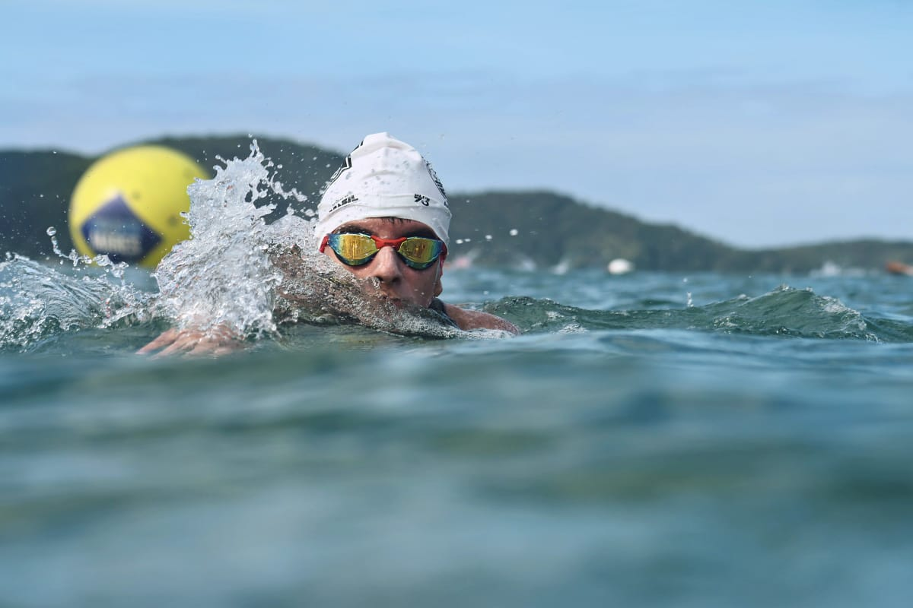
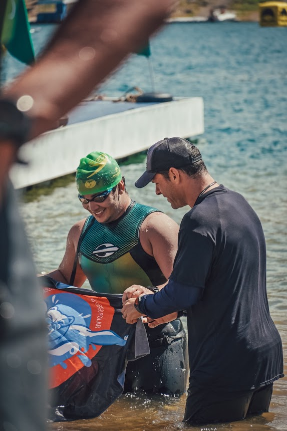
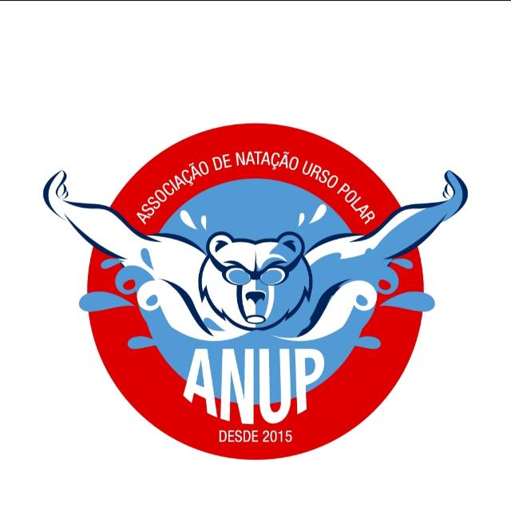
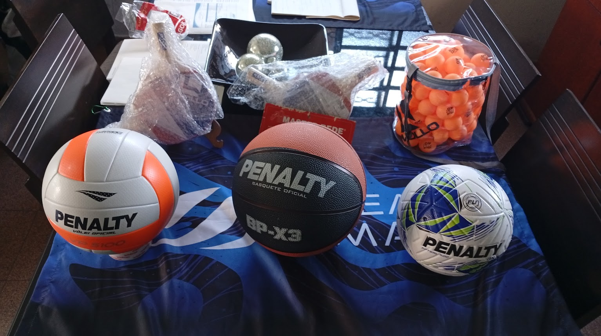

Cuidamos da elaboração, do protocolo no Ministério do Esporte e do acompanhamento até a captação. Você foca no esporte; a parte documental fica com a gente.
Primeira conversa sem custo · resposta em até 48h úteis


Empresas e pessoas físicas podem destinar parte do imposto de renda devido a projetos esportivos aprovados pelo Ministério do Esporte, dentro dos limites previstos na legislação.
Para a entidade proponente, o caminho passa por enquadramento correto, metas mensuráveis e orçamento consistente. É esse trabalho técnico que fazemos com você.
Associações, clubes e institutos sem fins lucrativos com regularidade fiscal em ordem.
Projetos de desporto educacional, de participação e de rendimento, conforme o enquadramento.
A aprovação autoriza a captação. O passo seguinte é apresentar o projeto ao mercado.

Cada etapa tem entregável definido e prazo combinado antes de começar.
Documentos da entidade, escopo e viabilidade avaliados antes da proposta.
Plano de trabalho, metas, cronograma e planilha orçamentária no formato exigido.
Submissão ao Ministério, acompanhamento do trâmite e resposta às diligências.
Apoio na captação e prestação de contas ao término do projeto.
Uma conversa para entender sua entidade e apontar o caminho viável.
Agendar conversa →Serviço principal: seu projeto escrito, protocolado e acompanhado.
Ver como funciona →Material de apresentação e orientação para conversar com patrocinadores.
Saber mais →
Palmar, pull buoy, snorkel frontal, elásticos e acessórios de treino. Atendimento direto com o responsável: você recebe a lista com preços e disponibilidade.
Não existe garantia de aprovação. O que garantimos é rigor técnico, prazo e acompanhamento das diligências.
Não. Primeiro o projeto é aprovado; depois ele é apresentado a empresas interessadas.
A elaboração leva algumas semanas. A análise do Ministério segue o calendário oficial.
Primeira conversa sem compromisso, direto no WhatsApp.